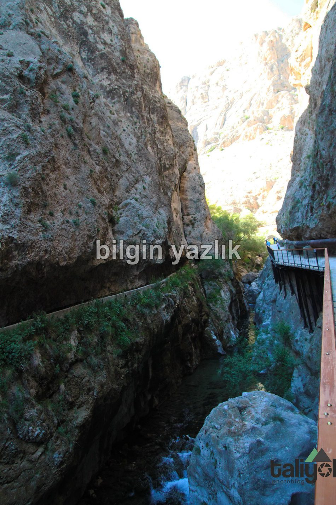
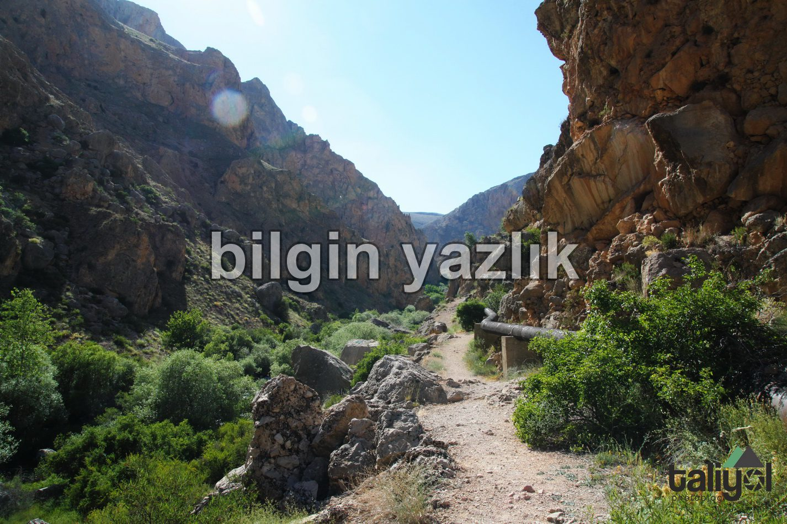
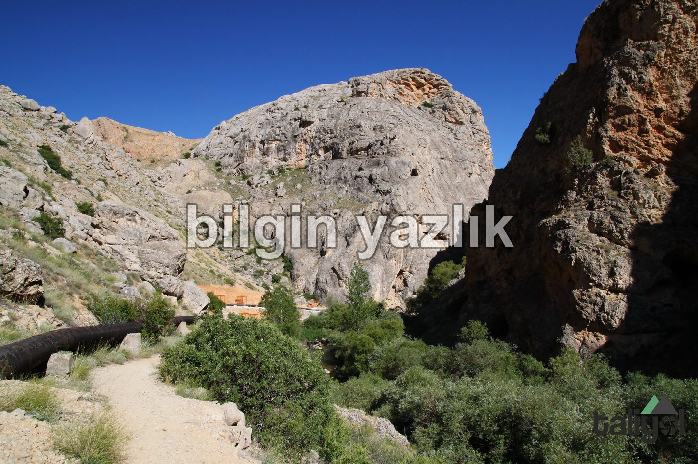

Şuğul Vadisi
Gürün sınırları içerisinde yer alan Şuğul vadisine ulaşım oldukça kolay, batı tarafından Gürün’e girerken yoldaki tabelayı takip ederek dönmeniz yeterli, vadinin ağzına kadar asfalt yol ile ulaşılabiliyor. Vadinin girişinde bir alabalık çiftliği bulunuyor, ardından kesme taşlar ile yapılmış yürüyüş yolunu takip ederek derin vadi içerisine doğru girilebiliyor. Vadinin tam ortasından bir çay akıyor, bu çay belirli yerlerde derinleşiyor, bazı yerlerde minik şelaleler olup çağlıyor. Yürüyüş yolu zeminden oldukça yüksek ve demir korkuluklar ile korunuyor. Yürüyüş yolu bittikten sonra piknik alanları yapılmış ve yol devam ediyor ancak yol bu noktadan itibaren tamamen toprak.
Vadi içerisinden akan çayın içinde balıklar yaşıyor ve olta balıkçılığı yapılabiliyor, suya girmek her ne kadar yasak olsa da yüzen çocuklar görmek mümkün. Şuğul vadisi trekking yapmak için oldukça elverişli bir vadi.



adi,Bu yazı taliyol arşivinden taşınmıştır. · özgün kayıt